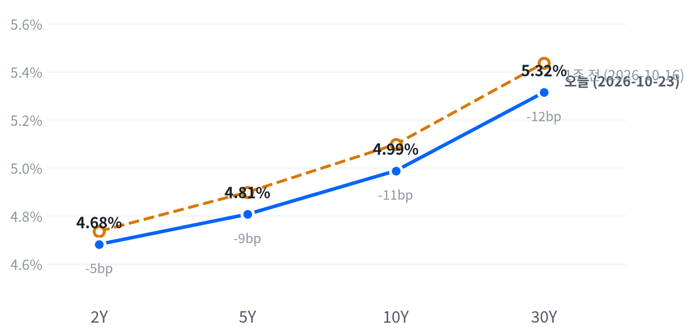

이란 혁명수비대의 유조선 공격 주장과 미국·이스라엘의 재공습 준비 보도에 유가가 다시 뛰었다. 에너지 업종만 크게 올랐고 필수소비재·헬스케어 같은 방어 업종까지 내려 다우가 가장 많이 빠졌다.
전날 성장 우려로 읽히던 유가 상승이 이날은 미시간대 기대인플레 상승과 겹쳐 단기 금리를 끌어올렸다. 시장이 12월 인상 경로를 얼마나 다시 반영할지는 10월 28일 FOMC 뒤 2년물 종가로 확인한다.
유가가 다시 시장을 움직였다. 이란 혁명수비대가 호르무즈 해협 인근에서 유조선 여러 척을 공격했다고 주장했고(독립 확인은 일부뿐), 미국·이스라엘이 이란 재공습을 준비한다는 보도가 겹쳐 WTI가 4.30% 올랐다. 에너지 업종만 크게 오르고 방어 업종까지 함께 내리면서 다우가 1.23% 빠졌다.
같은 유가 상승을 시장이 전날에는 성장 부담으로, 이날은 물가 부담으로 읽었다고 본다. 기대인플레와 2년물 금리가 함께 올랐고, 미시간대 조사에서는 1년·장기 기대인플레가 두 달 연속 올랐다. 반등의 크기는 작아 2년물은 전날 하락폭의 5분의 1만 되돌렸다. CME FedWatch 기준 12월 인상 확률은 약 71%라는 보도가 나왔지만 로이터 설문에서는 이코노미스트 전원이 12월 인상을 예상해, 시장 가격은 설문보다 인상 가능성을 낮게 본다. 우리는 기대인플레가 오르는 동안 연준이 12월 여지를 닫을 가능성은 시장이 보는 것보다 낮다고 판단한다. 가장 강한 반론은 연준이 AI 업체의 신용 부담과 고용 둔화를 앞세워 판단을 미루는 경우다. 연준 경로를 직접 보여 주는 OIS 자료가 없어 시장 기대와의 차이가 정확히 얼마인지는 알 수 없다.
에너지 업종의 상대 강세는 이날 다시 뒷받침됐다. 그러나 공격 주장의 대부분이 확인되지 않아, 유가 충격이 3개월 동안 이어질지는 판단을 보류한다. 유가가 오른 날 방어 업종이 피난처가 되지 못해, 금융·방어 업종과 장기 성장주처럼 금리에 민감한 테마는 FOMC 결과를 본 뒤 판단한다. 12월 정책 기대를 직접 담는 수단은 2년물 금리나 12월 연방기금 선물이지만, 회의 하나에 걸린 판단이고 비용·유동성 자료도 없어 이날은 새 아이디어로 내지 않는다.
10월 28일 네이버 2년물 종가가 10월 27일 종가보다 5bp 이상 오르면 연준이 12월 인상 여지를 닫지 않았다는 판단이 지지되고, 같은 폭 이상 내리면 판단은 약해져 연준이 신용 부담과 고용 둔화를 앞세웠다는 설명을 우선한다. 그 사이이거나, 연준이 실제로 인상하거나, 그날 WTI가 5% 이상 움직이거나, 두 날 종가가 없으면 결론을 내지 않는다. 그 전에 10월 26일 베라이즌 실적과 27일 신규주택 판매가 나오고, 28일에는 FOMC와 GE 버노바 실적이 겹친다.
출처: CBS, The Hill, CNBC, Kitco
| 지수 | 종가 | 등락 | 기준일 |
|---|---|---|---|
| 닛케이225 | 62,907.84 | -2.65% | 10월 22일 |
| 항셍 | 22,934.68 | -3.03% | 10월 22일 |
| 상해종합 | 3,658.03 | -1.48% | 10월 22일 |
| DAX | 25,371.75 | -1.07% | 10월 22일 |
| FTSE100 | 10,690.36 | -0.32% | 10월 23일 |
| 유로스톡스50 | 6,087.01 | -1.94% | 10월 22일 |
| VIX | 19.45 | +0.42p | 10월 23일 |
FTSE100과 VIX는 10월 23일 값이고, 나머지는 들어온 마지막 종가인 10월 22일 값이다. VIX 등락은 포인트다.
아시아와 유럽이 먼저 내렸고 미국이 그 흐름을 이었다. 표의 아시아 세 지수는 10월 22일 종가로 평균 2.39% 내렸고, 항셍이 가장 많이 빠졌다. 유럽 세 지수도 평균 1.11% 내렸다. 23일 종가가 들어온 FTSE100은 낙폭이 작았다.
야간 선물은 개장 직전이 바닥이었다. S&P 선물(ES)은 전일 16:00(ET) 7,716에서 09:00(ET) 7,660까지 밀렸다. 나스닥 선물(NQ)은 04:00 29,279가 고점이었고 같은 09:00에 29,006까지 내려왔다. 그사이 WTI는 자정 무렵 저점에서 꾸준히 올랐다. 현물은 S&P -0.34%, 나스닥 -0.43%, 러셀2000 -0.29%의 갭으로 하락 출발했다.
대형주는 장 막판까지 눌렸고 소형주는 버텼다. S&P는 하루 범위의 저점권에서 끝났고, 나스닥은 중간에서, 러셀2000은 고점권에서 마감했다. 오전에 나온 반등이 오후에 꺾여 대형주 지수는 약하게 끝났다.
저점권·고점권 경계는 최근 2,259거래일의 일간 종가 위치 이력으로 다시 잰 기준이다.
유가가 업종을 고른 날이다. 에너지가 2.60% 오르는 동안 필수소비재(-1.92%)·커뮤니케이션(-1.78%)·경기소비재(-1.66%)가 가장 많이 내렸다. 다우는 아메리칸익스프레스가 AI 도입을 이유로 인력 5% 감원을 발표한 뒤 약 4% 내려 다른 지수보다 더 빠졌다. 아메리칸익스프레스의 조정 주당순이익은 4.68달러로 추정치를 웃돌았고 연간 이익 전망도 올렸다. 기술 업종은 반도체와 보안 소프트웨어가 반등해 0.49% 올랐다. 시간외 거래 자료는 받지 못했다.
출처: CNBC
| 지수 | 종가 | 등락률 |
|---|---|---|
| 나스닥 | 25,955.34 | -0.21% |
| 러셀2000 | 2,775.90 | -0.29% |
| S&P500 | 7,623.68 | -0.52% |
| S&P500 성장주 | 136.48 | -0.52% |
| S&P500 가치주 | 238.12 | -0.56% |
| 다우존스 | 52,215.16 | -1.23% |
| 섹터 | 등락률 |
|---|---|
| 에너지 | +2.60% |
| 기술 | +0.49% |
| 부동산 | +0.12% |
| 유틸리티 | -0.72% |
| 소재 | -0.74% |
| 헬스케어 | -1.11% |
| 산업재 | -1.27% |
| 금융 | -1.32% |
| 경기소비재 | -1.66% |
| 커뮤니케이션서비스 | -1.78% |
| 필수소비재 | -1.92% |
유가 충격에 다우가 1.23% 내린 52,215로 4대 지수 가운데 가장 크게 빠졌다. S&P는 0.52% 내린 7,624로 마감했다. 나스닥은 0.21% 내린 25,955, 러셀2000은 0.29% 내린 2,776이다. 나스닥은 평소 하루 움직임의 5분의 1쯤, 러셀2000은 3분의 1쯤만 움직였다.
오전 반등은 오후 유가 상승을 이기지 못했다. 나스닥은 개장 한 시간 만에 시가보다 0.82% 높은 26,111까지 올랐다가 그 상승분을 대부분 반납했다. S&P도 오전 고점 뒤 밀려 저점 부근에서 끝났다. WTI가 그날 고점을 찍은 마감 직전과 대형주의 약한 마감이 겹치지만, 둘을 잇는 보도는 확인하지 못했다.
지수 하락은 커뮤니케이션(-0.23%p)과 경기소비재(-0.22%p)가 가장 많이 만들었다. 추정 기여도로 금융(-0.14%p)·헬스케어(-0.10%p)·산업재(-0.08%p)가 뒤를 이었고, 기술(+0.16%p)과 에너지(+0.06%p)가 낙폭을 덜었다. 업종 합으로 설명되지 않는 부분은 +0.12%p다.
추정 기여도는 업종 비중을 직접 받지 않아, 최근 252거래일 지수·업종 수익률로 추정한 비중을 곱한 값이다. 소재와 부동산은 비중을 추정할 수 없어 빠졌다.
성장주와 가치주가 거의 같은 폭으로 내려, 이날 하락은 스타일이 아니라 업종 사이의 차이였다. 유가가 오른 날 방어 업종이 피난처가 되지 못했고, 전날 방어 업종으로 몰렸던 자금이 금리 반등과 함께 되돌아 나왔을 수 있다. VIX는 0.42p 올라 19.45가 됐지만 하루 움직임은 평소보다 작았다. S&P가 저점권에서 끝나 매도 압력은 마감까지 이어졌으나, 시장 전반의 위험회피로 번졌다고 보기는 이르다고 판단한다.
| 만기 | 종가(10월 23일) | 전일比(bp) | 1주 전(10월 16일) | 주간 변화(bp) |
|---|---|---|---|---|
| 2Y | 4.682% | +3.4 | 4.736% | -5.4 |
| 5Y | 4.807% | +3.0 | 4.899% | -9.2 |
| 10Y | 4.988% | +2.7 | 5.098% | -11.0 |
| 30Y | 5.315% | +2.9 | 5.437% | -12.2 |
유가와 기대인플레가 국채금리를 다시 밀어 올렸다. 금리는 전 구간에서 3bp 안팎 올라 10년물이 4.988%로 끝났고, 최근 2년(504거래일) 가운데 이보다 높았던 날은 24일뿐이다. 2년물은 4.682%, 30년물은 5.315%로 마감했다.

네이버 국채 종가, 전 만기 10월 23일 기준. 1주 전(10월 16일)과 비교하면 2년물은 5.4bp, 30년물은 12.2bp 내려 장기물이 더 내린 불 플래트닝이다. 10년물 하루 변화는 최근 60거래일 평균 하루 변화폭의 0.68배다(야후 10년물 지수 기준).
하루로는 2년물이 가장 많이 올라 단기물이 앞선 소폭의 베어 플래트닝이었다. 2s10s는 30.6bp로 0.7bp 좁아졌고, 5s30s는 50.8bp로 거의 그대로다. 이날 반등은 한 주 동안의 하락을 일부만 되돌렸고, 한 주 단위의 불 플래트닝은 그대로다.
10월 22일까지 한 주의 금리 하락은 실질금리가 주도했다. 10월 22일 FRED 기준 10년물 하루 하락 17bp 가운데 실질금리가 12bp, 나머지가 기대인플레 몫이었고, 한 주 하락 14bp는 전부 실질금리 몫이었다. 23일에는 10년 기대인플레가 2bp, 5년 기대인플레가 3bp 올라 이날 반등의 상당 부분이 물가 보상 쪽이었을 수 있다. 기대인플레에는 위험·유동성 프리미엄도 섞여 있다. 23일 실질금리가 나오면 그 몫이 확인된다. 금리 반등의 원인으로는 유가 급등과 소비자 기대인플레 상승을 드는 보도가 나왔다.
회사채 시장은 위험을 더 요구했다. 하이일드 스프레드는 10월 22일 3.40%로 하루 13bp, 5거래일 17bp 넓어졌고, 투자등급 스프레드는 0.89%로 1bp 넓어졌다. AI 인프라 업체의 차입 부담 보도가 쌓인 주에 하이일드 쪽이 먼저 반응했다고 본다.
5년 뒤 5년 명목금리 5.14%, 실질 2.95%(10월 22일 기준). 기대인플레 쪽 수치와의 교차검증은 할 수 없었고, 위험 프리미엄이 섞인 값이다.
출처: CNBC
| 통화쌍 | 종가 | 등락률 | 기준일 |
|---|---|---|---|
| DXY | 101.799 | +0.17% | 10월 23일 |
| USD/KRW | 1,324.16 | -0.13% | 10월 23일 |
| USD/JPY | 156.834 | -0.02% | 10월 23일 |
| EUR/USD | 1.1198 | -0.19% | 10월 23일 |
달러는 소폭 강해졌다. 달러지수는 0.17% 오른 101.799로 평소 하루 움직임의 절반쯤 움직였고, 유로/달러는 0.19% 내린 1.1198이다. 엔/달러는 156.834엔으로 제자리였다. 원/달러는 1,324원으로 조금 내려, 최근 2년(504거래일) 가운데 이보다 낮았던 날이 하루뿐인 자리에 있다.
미국 2년물 금리가 오르고 주식이 내린 날이라 금리차와 안전자산 수요가 모두 달러 쪽을 가리켰다. 둘 가운데 어느 쪽이 더 컸는지는 이날 가격만으로 구분하기 어렵다. 유로가 달러보다 약했던 것은 유가 상승이 에너지를 수입하는 유럽에 더 부담이 된다는 설명과 같은 방향이지만, 이를 직접 보여 준 보도는 없어 가설로 둔다. 엔화는 금리차가 벌어졌는데도 달러에 밀리지 않았다.
환율은 뉴욕 16:00 ET 가격, 전 거래일 같은 시각 대비다.
| 품목 | 종가 | 등락률 |
|---|---|---|
| WTI | $103.64 | +4.30% |
| Brent | $111.94 | +2.99% |
| 천연가스 | $3.051 | -3.24% |
| 금 | $4,013.30 | -0.77% |
WTI가 4.30% 급등해 103.64달러로 마감했다. 평소 하루 움직임의 1.6배이고, 최근 2년(504거래일) 가운데 이보다 높았던 날은 11일뿐이다. 브렌트는 2.99% 오른 111.94달러다. 금은 0.77% 내린 4,013달러, 천연가스는 3.24% 내린 3.051달러였다.
유가를 밀어 올린 것은 호르무즈 해협의 공급 불안이다. 이란 혁명수비대는 해협 인근에서 유조선 7척을 공격했다고 주장했는데, 영국 해사무역기구(UKMTO)가 확인한 것은 2척이다. 미국·이스라엘이 이란 재공습을 준비한다는 보도와 이란의 보복 경고가 겹쳤고, 마이크 왈츠 유엔 대사는 전쟁이 1년 더 갈 수 있다고 말했다. 트럼프 대통령은 이란이 가짜 공격을 꾸며 유가를 올린다고 비난했다. WTI는 장중 되돌림 없이 마감 직전까지 올라 시가보다 3.90% 높은 103.92달러에서 그날 고점을 찍었다. 공격 주장 대부분이 확인되지 않아, 이 상승은 실제 공급 차질보다 해협 통항 위험에 붙은 프리미엄으로 본다.
WTI가 브렌트보다 더 올라 두 유종의 가격 차는 8.30달러로 전일(9.32달러)보다 좁혀졌다. 표의 WTI는 12월물, 브렌트는 1월물이라 가격 차에는 만기 차이도 들어 있다. 금은 금리가 오른 날 내렸다. 뉴욕 증시 개장 직전 고점을 찍은 뒤 개장 한 시간 만에 시가보다 1.01% 낮은 3,989달러까지 밀렸다가 일부 되돌렸다. 최근 몇 달 동안 금과 금리는 거의 따로 움직여, 이날 하락을 금리 탓으로 돌리기는 어렵다. 천연가스 하락의 재료는 확인되지 않았다.
최근 60거래일 동안 열 개 자산의 움직임 가운데 가장 큰 공통 요인은 전체의 40.6%를 설명하고, 여전히 주식이 이끈다. 이 요인과 함께 움직이는 자산군은 직전 60거래일의 금리에서 원자재로 바뀐 상태가 이어진다. 이날처럼 유가가 주식과 같은 공통 요인에 묶여 움직이는 구간이다.
WTI의 위치는 최근 2년(504거래일) 종가 기준이다. 원자재·환율은 뉴욕 16:00 ET 가격, 전 거래일 같은 시각 대비다. 결제가와 다를 수 있다.
출처: CBS, The Hill
미국 경기 국면은 성장 보합·물가 교착인 교착을 10월 14일부터 8영업일째 유지한다. 새로 나온 경제지표는 미시간대 조사뿐이고, 성장 점수 0.029와 물가 점수 -0.028은 어느 쪽으로도 기울 만큼이 아니다. 국면은 10월 29일 PCE와 11월 6일 10월 고용에서 다시 점검한다.
| 지표 | Actual | Forecast | Previous | 발표일 | 컨센 대비 | 직전 대비 | 추세 |
|---|---|---|---|---|---|---|---|
| 신규 실업수당 청구 | 194,000 | 200,000 | 200,000 | 2026-10-22 (10월 17일 주간) | 하회▼ | 개선 | 개선(미미) · 4주 평균 202K → 198K |
| 신규 청구 4주 평균 | 197,750 | — | 198,750 | 2026-10-22 (10월 17일 주간) | 개선 | 개선(완만) · 4주 평균 205K → 199K | |
| 계속 실업수당 청구 | 1,728,000 | — | 1,703,000 | 2026-10-22 (10월 10일 주간) | 악화 | 개선(뚜렷) · 4주 평균 1,742K → 1,711K | |
| 비농업 고용 변화(9월) | +29K | — | +133K | 2026-09 기준월 | 악화 | 악화(미미) · 3개월 평균 +81K → +51K | |
| 실업률(9월) | 4.2% | — | 4.1% | 2026-09 기준월 | 악화 | 개선(미미) · 3개월 평균 4.27% → 4.13% | |
| 평균시간당임금 MoM(9월) | +0.13% | — | +0.32% | 2026-09 기준월 | 악화 | 악화(미미) · 3개월 평균 +0.21% → +0.19% | |
| 구인건수(8월) | 7,079K | — | 7,335K | 2026-08 기준월 | 악화 | 악화(미미) · 3개월 평균 7,336K → 7,199K |
| 지표 | Actual | Forecast | Previous | 발표일 | 컨센 대비 | 직전 대비 | 추세 |
|---|---|---|---|---|---|---|---|
| 산업생산 MoM(9월) | +0.66% | — | +0.06% | 2026-09 기준월 | 개선 | 보합 · 3개월 평균 +0.40% → +0.32% | |
| 내구재주문 MoM(8월) | -0.07% | — | +0.87% | 2026-08 기준월 | 악화 | 악화(완만) · 3개월 평균 +1.95% → +0.46% | |
| 신규주택판매(8월) | 684K | — | 643K | 2026-08 기준월 | 개선 | 개선(미미) · 3개월 평균 645K → 666K | |
| 기존주택판매(9월) | 399만 | — | 393만 | 2026-09 기준월 | 개선 | 악화(뚜렷) · 3개월 평균 4,120K → 3,993K | |
| 실질GDP QoQ 연율(2분기) | +2.2% | — | +2.5% | 2026년 2분기 기준 | 악화 | — | |
| 필라델피아 연준 제조업(10월) | 20.9 | 28.4 | 37.8 | 2026-10-15 | 하회▼ | — | — |
| 지표 | Actual | Forecast | Previous | 발표일 | 컨센 대비 | 직전 대비 | 추세 |
|---|---|---|---|---|---|---|---|
| 소매판매 MoM(9월) | +0.77% | — | +1.29% | 2026-09 기준월 | 악화 | 보합 · 3개월 평균 +0.61% → +0.55% | |
| 미시간대 소비자심리(9월 확정) | 48.1 | — | 51.7 | 2026-09 기준월 | 악화 | 개선(완만) · 3개월 평균 48.0 → 51.7 | |
| 미시간대 소비자심리(10월 확정) | 48.0 | 46.3 | 48.1 | 2026-10-23 | 상회▲ | — | — |
미시간대가 10월 23일 낸 10월 확정 소비자심리는 48.0으로 예비치 46.3보다 올랐고, 9월 확정치 48.1과 거의 같았다. 표의 FRED 계열은 9월 48.1(8월 51.7)까지 반영돼 있다. 1년 기대인플레는 4.6%에서 4.7%로, 장기 기대인플레는 3.4%에서 3.5%로 올랐다.
미시간대는 현재 여건 지수의 하락을 전부 내구재 구매 여건이 만들었다고 밝혔다. 높은 금리와 구매 부담 우려로 이 항목이 18% 급락한 반면, 향후 경기 여건은 약 14% 나아졌다. 장기 기대인플레는 2024년 범위(2.8~3.2%)를 넘었고, 두 시계 모두 두 달 연속 올라 5월 이후 가장 높다.
심리는 바닥권에서 멈췄지만 기대인플레는 다시 오르기 시작했다고 본다. 연준이 경계하는 기대 고착 쪽의 증거라 12월 인상 판단을 뒷받침한다. 높은 금리가 내구재 구매를 누른다는 대목은 긴축의 실물 부담도 보여 주지만, 국면 좌표를 움직일 크기는 아니다.
| 지표 | Actual | Forecast | Previous | 발표일 | 컨센 대비 | 직전 대비 | 추세 |
|---|---|---|---|---|---|---|---|
| CPI YoY(9월) | 3.72% | — | 3.35% | 2026-09 기준월 | 상승 | 둔화(미미) · 3개월 평균 3.80% → 3.46% | |
| CPI MoM(9월) | +0.65% | — | +0.40% | 2026-09 기준월 | 상승 | 재가속(완만) · 3개월 평균 +0.23% → +0.37% | |
| Core CPI YoY(9월) | 2.57% | — | 2.45% | 2026-09 기준월 | 상승 | 둔화(미미) · 3개월 평균 2.71% → 2.49% | |
| Core CPI MoM(9월) | +0.33% | — | +0.29% | 2026-09 기준월 | 상승 | 재가속(완만) · 3개월 평균 +0.19% → +0.28% | |
| PPI 최종수요 MoM(9월) | +1.34% | — | +0.47% | 2026-09 기준월 | 상승 | 재가속(완만) · 3개월 평균 +0.49% → +0.66% | |
| PCE 물가 YoY(8월) | 3.42% | — | 3.36% | 2026-08 기준월 | 상승 | 둔화(미미) · 3개월 평균 3.59% → 3.41% | |
| Core PCE YoY(8월) | 3.01% | — | 2.98% | 2026-08 기준월 | 상승 | 둔화(미미) · 3개월 평균 3.12% → 3.01% | |
| 미시간대 1년 기대인플레(9월 확정) | 4.6% | — | 4.0% | 2026-09 기준월 | 상승 | 둔화(완만) · 3개월 평균 4.70% → 4.27% | |
| 미시간대 1년 기대인플레(10월 확정) | 4.7% | — | 4.6% | 2026-10-23 | — | — | |
| 미시간대 장기 기대인플레(10월 확정) | 3.5% | — | 3.4% | 2026-10-23 | — | — |
직전 대비는 Actual을 Previous와 비교한 것이고, 추세는 최근 3개월 평균을 그 앞 3개월 평균과 비교한 것입니다(주간 실업수당 청구는 4주 평균끼리). 추세의 세기는 그 지표가 평소 움직이는 폭에 견준 크기이고, 작은 변화는 보합으로 봅니다. 분기 지표인 GDP는 두 비교가 같은 숫자를 보므로 직전 대비만 싣습니다.
연준의 다음 금리 변경은 12월 9일 FOMC의 25bp 추가 인상이라는 판단을 유지한다. CME FedWatch 기준 12월 인상 확률이 약 71%라는 보도가 나왔고(10월 23일), 10월 인상 확률은 약 7.2%로 1주 전(27.7%)보다 낮아졌다. 로이터 설문에서는 이코노미스트 100명 전원이 12월 인상을 예상해 시장 가격과 설문 사이에 차이가 남아 있다. 전일 전언과 같은 측정이 아니어서 시점 판단은 바꾸지 않는다.
10월 27일 FOMC 회의 전까지 CME FedWatch 10월 인상 확률이 장 마감 무렵 기준으로 과반에 올라서면 시점을 10월로 당긴다. 11월 6일 10월 고용에서 실업률이 3월 이후 범위(4.1~4.3%) 위로 올라서면 인상 우위 판단을 철회한다.
자산별 전달경로는 전일과 같다.
10:00(ET) 확정치는 예비치를 웃돌았지만, 금리가 반응한 재료로는 심리보다 기대인플레를 드는 보도가 나왔다. 일간 종가만 있어 발표 직후 반응은 알 수 없고, 같은 날 유가 급등이 겹쳐 두 재료의 몫은 가를 수 없다. 단기 기대인플레의 컨센서스는 확인하지 못했다.
출처: Newsquawk, CNBC, Kitco
| 지수 | 순위(5거래일 전) | 1개월 | 3개월 | SPY 대비 3개월 | 대비 변화 | 12-1 모멘텀 | 변동성 | 1일 VaR 95% | 베타 | 50/200일선 | 52주 고점 대비 |
|---|---|---|---|---|---|---|---|---|---|---|---|
| 소프트웨어 IGV | 1(2) | +3.2% | +21.6% | +18.6%p | +9.5%p | -5.6% | 34.0% | 2.6% | 1.98 | 위/위 | -5.5% |
| 에너지 XLE | 2(1) | +10.8% | +19.5% | +16.4%p | +1.1%p | +46.7% | 21.5% | 1.7% | -0.64 | 위/위 | 0.0% |
| 초대형주 Top 50 XLG | 5(8) | -2.6% | +4.3% | +1.2%p | +0.4%p | +11.4% | 12.7% | 0.9% | 1.18 | 아래/위 | -4.3% |
| 경기소비재 XLY | 9(13) | +2.5% | +2.3% | -0.8%p | +4.0%p | -6.3% | 16.9% | 1.6% | 1.09 | 아래/아래 | -8.6% |
| 금융 XLF | 10(11) | +2.5% | -1.4% | -4.5%p | -0.8%p | +5.7% | 12.5% | 1.3% | 0.51 | 아래/위 | -4.2% |
| 반도체·AI 하드웨어 SMH | 14(16) | -12.2% | -3.9% | -7.0%p | -0.5%p | +77.9% | 34.3% | 4.0% | 2.19 | 아래/위 | -21.2% |
| 모멘텀 팩터 MTUM | 15(15) | -8.8% | -4.1% | -7.2%p | -1.1%p | +27.4% | 22.1% | 2.6% | 1.40 | 아래/위 | -16.0% |
| 은행 KBE | 16(22) | +1.6% | -4.3% | -7.4%p | +3.6%p | +16.3% | 15.3% | 1.4% | 0.43 | 아래/위 | -7.6% |
| 소형주 IWM | 17(21) | -2.1% | -5.6% | -8.7%p | +1.6%p | +16.9% | 13.8% | 1.4% | 0.98 | 아래/아래 | -9.4% |
| 금속·광업 XME | 19(9) | -10.7% | -6.5% | -9.6%p | -9.8%p | +11.3% | 34.8% | 3.7% | 1.96 | 아래/아래 | -27.4% |
| 소형 성장 IWO | 20(24) | -4.1% | -7.4% | -10.5%p | +1.9%p | +12.3% | 17.7% | 2.0% | 1.31 | 아래/아래 | -12.6% |
| 전력망 GRID | 21(17) | -8.7% | -7.6% | -10.7%p | -3.7%p | +18.0% | 23.4% | 2.7% | 1.53 | 아래/아래 | -18.1% |
| 주택건설 XHB | 22(25) | +1.6% | -9.4% | -12.5%p | +0.6%p | -9.2% | 25.1% | 2.3% | 1.11 | 아래/아래 | -18.1% |
| 산업재 XLI | 24(20) | -2.5% | -9.9% | -13.0%p | -4.3%p | +11.7% | 13.6% | 1.4% | 0.87 | 아래/아래 | -11.5% |
| 방산 ITA | 25(23) | -5.0% | -17.0% | -20.1%p | -8.3%p | +1.3% | 17.5% | 2.1% | 0.76 | 아래/아래 | -20.0% |
| 지수 | 순위(5거래일 전) | 1개월 | 3개월 | SPY 대비 3개월 | 대비 변화 | 12-1 모멘텀 | 변동성 | 1일 VaR 95% | 베타 | 50/200일선 | 52주 고점 대비 |
|---|---|---|---|---|---|---|---|---|---|---|---|
| 헬스케어 XLV | 3(3) | +5.5% | +10.1% | +7.1%p | -1.2%p | +18.3% | 17.2% | 1.4% | 0.12 | 위/위 | -1.1% |
| 배당 SCHD | 4(4) | +6.6% | +6.3% | +3.3%p | +0.7%p | +26.9% | 11.2% | 0.9% | 0.14 | 위/위 | -0.4% |
| 필수소비재 XLP | 6(6) | +8.0% | +4.1% | +1.0%p | +0.2%p | +5.3% | 15.5% | 1.4% | -0.15 | 위/위 | -1.9% |
| 퀄리티 팩터 QUAL | 8(7) | +0.1% | +2.8% | -0.3%p | -1.1%p | +15.3% | 8.8% | 0.8% | 0.77 | 아래/위 | -2.1% |
| 저변동성 SPLV | 11(14) | +6.3% | -1.8% | -4.8%p | 0.0%p | -0.5% | 10.1% | 1.0% | 0.03 | 위/위 | -2.7% |
| 유틸리티 XLU | 18(19) | +8.1% | -6.2% | -9.2%p | -0.7%p | -10.4% | 15.6% | 1.4% | 0.11 | 위/아래 | -9.0% |
| 지수 | 순위(5거래일 전) | 1개월 | 3개월 | SPY 대비 3개월 | 대비 변화 | 12-1 모멘텀 | 변동성 | 1일 VaR 95% | 베타 | 50/200일선 | 52주 고점 대비 |
|---|---|---|---|---|---|---|---|---|---|---|---|
| 일본 EWJ | 7(5) | -1.8% | +2.8% | -0.2%p | -2.1%p | +21.6% | 16.2% | 1.3% | 1.08 | 아래/위 | -5.3% |
| 신흥국 EEM | 12(12) | -7.8% | -2.5% | -5.6%p | -1.4%p | +26.4% | 20.5% | 2.2% | 1.39 | 아래/아래 | -12.9% |
| 유럽 VGK | 13(10) | -2.1% | -2.7% | -5.8%p | -2.4%p | +12.5% | 11.2% | 1.2% | 0.67 | 아래/아래 | -7.2% |
| 중국 MCHI | 23(18) | -7.2% | -9.7% | -12.8%p | -4.3%p | -14.6% | 15.6% | 1.8% | 0.65 | 아래/아래 | -23.9% |
| 지수 | 순위(5거래일 전) | 1개월 | 3개월 | SPY 대비 3개월 | 대비 변화 | 12-1 모멘텀 | 변동성 | 1일 VaR 95% | 베타 | 50/200일선 | 52주 고점 대비 |
|---|---|---|---|---|---|---|---|---|---|---|---|
| S&P 500 SPY | – | -0.9% | +3.1% | 0.0%p | – | +16.1% | 10.3% | 0.8% | 1.00 | 아래/위 | -2.5% |
| S&P 500 동일가중 RSP | – | +3.0% | +1.0% | -2.1%p | – | +12.5% | 10.1% | 0.8% | 0.66 | 위/위 | -2.4% |
| 나스닥 100 QQQ | – | -5.0% | +3.4% | +0.3%p | – | +23.0% | 17.6% | 1.7% | 1.55 | 아래/위 | -7.3% |
가격 기준 시장 국면은 강세이고, 7월 31일 횡보에서 넘어온 뒤 60거래일째다. SPY가 759.97로 50일선(766.90) 아래에서 끝나 그날 조건이 횡보를 가리킨 날이 2거래일째이고, 한 거래일 더 이어지면 국면이 횡보로 바뀐다. 52주 고점과의 거리는 2.45%로 단기 약세 조건과는 아직 멀다.
소프트웨어의 3개월 상대수익률이 한 주 사이 크게 개선됐다. 순위는 2위에서 1위로 올랐고, SPY 대비 3개월 상대수익률은 9.46%p 늘어난 +18.57%p다. 이날 사이버보안주 급등이 그 흐름을 이었다. 반대로 금속·광업은 9위에서 19위로 밀려 상대수익률이 9.77%p 줄어든 -9.55%p가 됐다. 산업재도 20위에서 24위로 내려가 상대수익률이 4.31%p 나빠진 -12.98%p다. AI 데이터센터 전력 장비주의 매도가 산업재로 번졌다는 보도가 이 약세와 겹친다.
위험 지표는 엇갈린다. 하이일드 스프레드는 10월 22일까지 5거래일 사이 17bp 넓어져 위험회피를 가리키지만, 10년 실질금리는 같은 기간 14bp 내렸다. VIX는 19.45로 높은 편이다. 순유동성은 4주 사이 늘었지만 금융여건지수가 조금 조여져 유동성 방향은 중립이다.
출처: Benzinga
알파벳(A주 -1.24%, C주 -1.08%)은 커뮤니케이션 업종 하락에서 지수를 가장 많이 끌어내린 종목이었다. 확인된 재료 없음.
크라우드스트라이크(+8.25%)·팔로알토 네트웍스(+7.22%)가 급등하고 마이크로소프트(+0.66%)가 올라 소프트웨어 업종의 상대 강세를 키웠다. 에버코어 ISI는 이날 오전 사이버보안 유통 채널 조사에서 연말 보안 예산이 견조해졌다고 보고, 두 회사를 AI 보안 지출의 최대 수혜로 꼽았다. 전날 PHP 재단이 AI의 도움으로 찾은 치명적 결함을 공개한 것도 앞선 계기로 거론됐다. 마이크로소프트의 고유 재료는 확인되지 않았다.
마이크론(+2.46%)은 반도체·AI 하드웨어 관련주의 반등을 이끌었다. 전날 필라델피아 반도체지수가 6.7% 급락한 뒤의 반등이다. SK하이닉스가 자회사 솔리다임의 미국 상장을 철회해 낸드 증설 자금이 줄어든다는 해석과 증권사들의 투자의견 유지가 겹쳤다. 하루 반등만으로 이 업종의 3개월 상대수익률 악화가 멈췄다고 보기는 이르다.
블룸 에너지(-11.24%)는 전력망·AI 전력 장비 관련주의 약세를 키웠다. 3분기 매출이 12.4억 달러로 138% 늘고 올해 매출 전망을 44억~46억 달러로 올렸지만, 잉여현금흐름이 -1.806억 달러로 적자로 돌아섰고 증권사들은 목표가를 내렸다. 매출 성장보다 현금흐름이 주가를 움직인 사례로, 이번 주 AI 공급망 매도와 같은 방향이다.
AT&T(-7.96%)는 SpaceX가 크라운캐슬과 미국 기지국 8만 곳 이상의 접근권을 협상 중이라는 보도에 급락했다. 같은 보도에 T-모바일과 베라이즌도 장 초반 내리고 크라운캐슬은 올랐다는 보도가 나왔다. 계약은 공식 확인되지 않았다.
AI 인프라 다섯 종목(마벨·코히런트·루멘텀·GE 버노바·버티브)은 최근 20거래일 동안 시장보다 19.01% 뒤처졌다. 그중 반도체 축이 -18.18%p, 성장−가치 축이 -6.08%p, 대형−소형 축이 -0.37%p를 설명하고, 세 축으로 설명되지 않는 몫은 +5.61%p다. 이 묶음의 약세는 반도체 업종 공통의 매도로 대부분 설명된다고 본다.
하루 초과수익의 20거래일 합이고, 세 축(성장−가치·대형−소형·반도체)의 몫은 최근 60거래일로 추정한 민감도를 곱한 값이다. 시장 베타는 3.154다.
출처: 24/7 Wall St, Yahoo Finance, Invezz, Motley Fool, Opening Bell Daily, Global Banking & Finance, Forbes
연준이 10월 28일 동결하면서도 12월 인상 여지를 닫지 않아 2년물이 오른다는 판단(10월 23일)의 출발점은 이날 네이버 종가 2년물 4.682%다. 10월 28일 네이버 2년물 종가가 10월 27일 종가보다 5bp 이상 오르면 판단이 지지되고, 같은 폭 이상 내리면 판단은 약해져 연준이 신용 부담과 고용 둔화를 앞세웠다는 설명을 우선한다. 그 사이이거나, 연준이 실제로 인상하거나, 그날 WTI가 5% 이상 움직이거나, 두 날 종가가 없거나 만기별 기준일이 갈리면 결론을 내지 않는다. 일간 종가 비교라 발표 직후 반응은 재지 않는다. 이 폭은 이날 10년물 하루 변화로 역산한 평소 하루 폭이고, 2년물 고유의 평소 폭은 자료에 없어 10년물 값을 빌렸다.
2년물 하락의 주된 부분을 12월 인상 경로의 재가격으로 본 판단(10월 22일)은 첫 세션에서 지지 기준 안쪽에 머물렀고, 결론은 10월 27일 종가에서 낸다. 2년물은 4.682%로 전날 하락폭의 19.4%를 되돌려 지지 기준(4.698% 이하) 안에 있다. 그러나 나스닥이 10월 21일 종가보다 2.80% 낮아 주가 회복이라는 전제가 아직 서지 않았다. 이날 2년물 반등에는 유가와 기대인플레가 밀어 올린 몫이 있어 피난 수요가 빠진 결과로만 보기 어렵다. 27일에 결론을 낼 때 같은 기간의 유가 흐름을 함께 적는다.
HDD 2종의 추가 낙폭을 포지션 축소의 고베타 효과로 본 판단(10월 16일)은 약화로 닫는다. 23일 웨스턴디지털 1일 수익률에서 마이크론 1일 수익률을 뺀 값이 -5.43%p로 미리 정한 약화 기준(0%p 이하)에 들었다. 다음 분기 매출 가이던스 중간값(51억 달러)이 이번 분기 매출(43.8억 달러)을 넘었고, 경영진은 콜에서 장기 계약 가격 인상과 신규 계약을 설명했다. 실적이 수요를 확인한 뒤에도 웨스턴디지털은 마이크론보다 약했다. 새 기간에 대한 「완판」 표현은 찾지 못했다. 무엇이 이 차이를 만들었는지는 가리지 못한다. 구간 안에 공급 증설 뉴스가 없었고 경영진은 추가 증설이 없다고 했으며, 수요처인 뉴클라우드의 신용 압박이나 앞선 할인 해소 뒤 차익 실현도 같은 결과를 낸다. 실행한 포지션이 없어 성과는 잴 수 없다.
단기물이 12월 인상을 반영해 커브가 평탄해졌다는 판단(10월 21일)은 금리차로는 기준 안쪽이다. 2s10s는 30.6bp로 지지 기준(32.3bp 이하) 안에 있다. 그러나 12월 인상 확률이 약 71%로 전해져, 10월 28일 FOMC 당일에도 80% 아래면 미리 정한 규칙대로 결론을 내지 않는다.
신용·수익성 우려가 AI 인프라 급락을 이끌었다고 본 판단(10월 14일)은 이날 비교에 들지 않았다. 2년물이 5bp 이상 오른 세션만 재기로 했는데 이날 상승폭은 3.4bp였다. 블룸 에너지의 현금흐름 급락과 코어위브 CDS 확대 보도는 이 판단과 같은 방향이지만 미리 정한 확인 기준 밖의 증거다. 확인 구간은 10월 27일 종가까지다.
헬스케어 강세를 AI 관련주에서 빠진 자금의 반대편으로 본 판단(10월 20일)도 재지 않았다. AI 인프라 다섯 종목이 S&P보다 1.5%p 이상 강한 세션만 재는데, 이날 다섯 종목 단순평균과 S&P의 차이는 +0.78%p였다. 남은 구간은 10월 26일부터 27일 16:00(ET)까지다.
연준 인상 사이클과 AI 자본지출 랠리가 따로 간다는 판단(9월 22일)은 결론을 계속 보류한다. 확인하려면 실질금리가 오르고 금리 민감 업종이 약한 날이 필요한데, 23일 실질금리는 아직 나오지 않았다. 기한은 10월 28일 14:00(ET) FOMC다.
통신 3사 급락을 장기 가격결정력의 재평가로 본 판단(10월 9일)은 유지한다. AT&T가 10월 21일 실적 발표 뒤 SpaceX 기지국 협상 보도에 다시 급락한 것은 이 판단과 같은 방향이지만 미리 정한 확인 기준 밖이다. 확인은 10월 26일 07:00(ET) 베라이즌 3분기 실적에서 한다. 그 전에 SpaceX나 크라운캐슬이 계약을 확인하거나, 베라이즌의 23일·26일 종가를 확보하지 못하면 결론을 내지 않는다.
시세는 Yahoo Finance와 네이버 국채 종가, 경제지표는 FRED와 각 발표 기관(BLS·BEA·Census 등), 그 밖의 내용은 본문에 밝힌 출처에서 가져왔다. 이 보고서는 투자 자문이 아니며 특정 자산의 매수·매도를 권유하지 않는다. 투자 판단과 그 결과에 대한 책임은 전적으로 투자자 본인에게 있다.